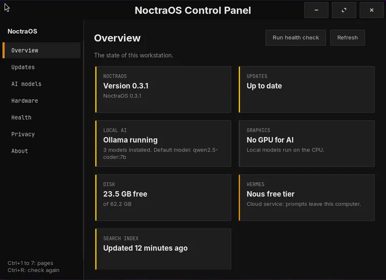
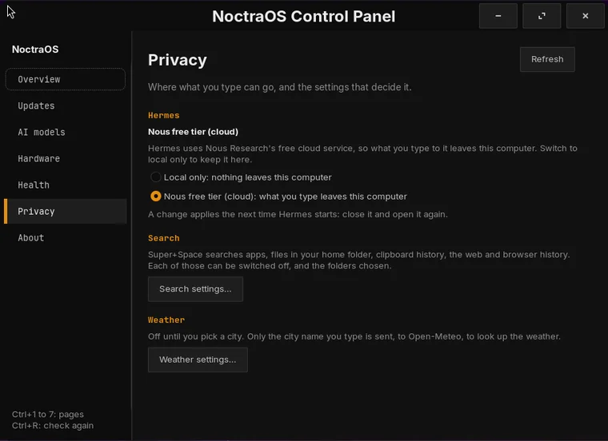

Noctra OS 0.3 · based on Ubuntu
Install. Detect. Run AI.
Noctra OS is an AI development workstation OS. It detects your graphics card, sets up local AI, and puts the AI coding assistants one click from the Start button.
What is Noctra OS?
A development workstation with AI already set up.
Noctra OS is based on Ubuntu LTS, with a Start button, a dock, window buttons and a task manager. The first time you log in, Noctra sets up the AI models, assistants and coding tools for you.
Find anything with Super + Space
One shortcut searches your apps, files, clipboard history and the web from a single box.
AI assistants one click away
Hermes and six AI coding assistants, such as Claude Code and Codex, sit in the Start panel.
Graphics card ready for AI
Noctra detects NVIDIA and AMD graphics cards and installs the driver, plus CUDA or ROCm, so local AI models use the card.
A first look
Calm, dark and familiar.
A Start button above a centred dock, a task manager and window buttons. The AI assistants are one click from the Start button, and one Control Panel looks after updates, AI models, your graphics card and your privacy choices.




Get started
Ready to try it?
Download the installer, write it to a USB stick and boot. Noctra sets itself up on first login, which takes 25 to 40 minutes.